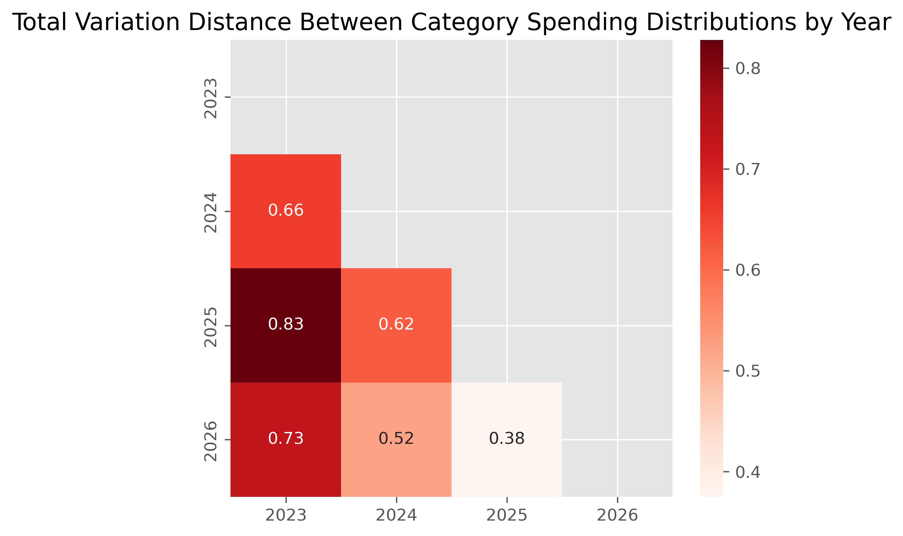
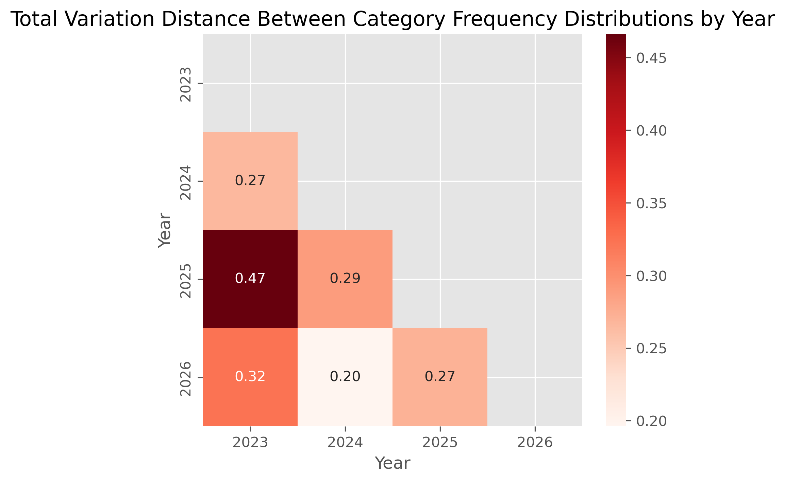
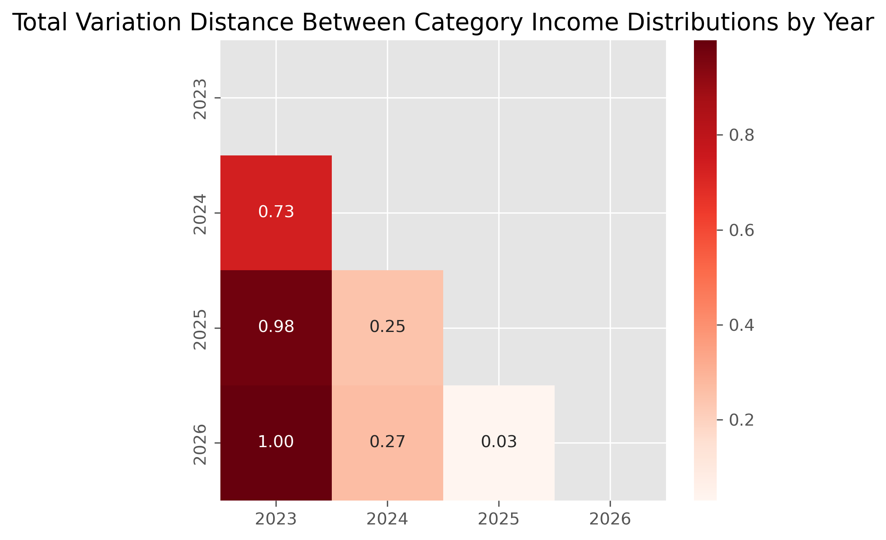
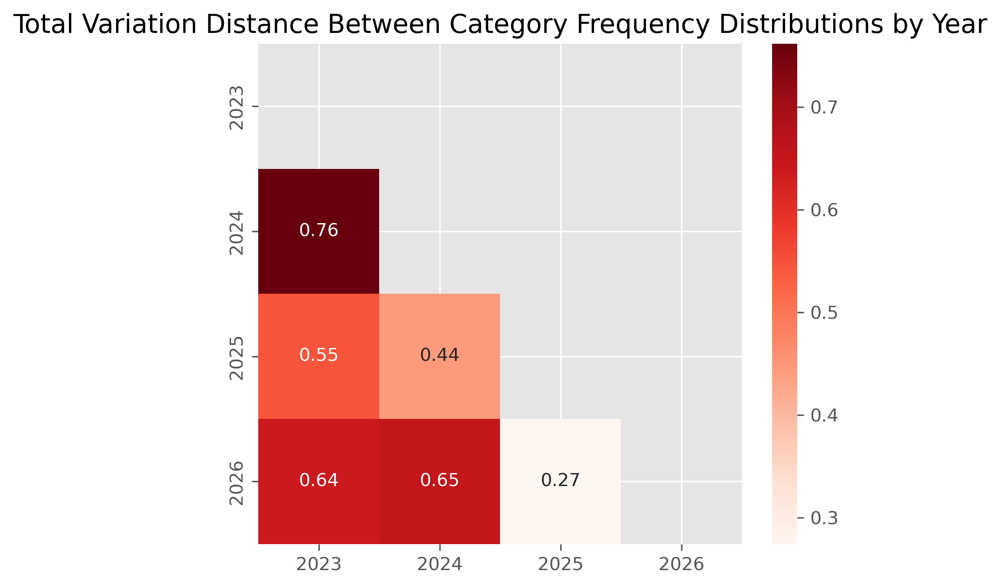

Introduction
This project analyzes personal transaction data to better understand spending behavior across time and categories. The goal is to identify meaningful patterns and communicate them through visual and statistical analysis.
Summary
TL;DR — 3 key takeaways
01
Loan payments restructured the entire spending distribution
Absent in 2023–2024, loan payments emerge in 2025 as the single largest expenditure category — absorbing ~⅓ of total spending and compressing every other category's share. This one structural shift explains most of the divergence seen in the TVD heatmaps.
02
2024 surplus > 2025 surplus, despite lower income
2024 generated the largest income-to-spending margin of any year — not because income was highest, but because spending had not yet scaled to match it. By 2025, rising obligations narrowed the margin even as income grew. Income gains do not translate proportionally into savings.
03
Spending volatility is a frequency problem, not a volume problem
2024's high month-to-month variance is driven by a small number of large transactions concentrating in single categories — not by overall volume. By 2025, transaction activity diversifies across categories and months, producing stability without a reduction in total spend.
Research Question
How do spending habits differ across years (2023-2026) and categories? Are category spending distributions meaningfully different from one year to another?
Data Overview
The dataset contains transaction-level financial records with variables such as: transaction date, amount, category, whether a record is considered credit/debit, and a description of the transaction (similar to a bank memo).
Data Preparation
Steps had to be made to make sure the data was ready for analysis as some info was missing in certain columns.
- Removed columns that were entirely empty.
- There were some transactions that were not categorized, but it was a small amount so I manually assigned them to the correct one.
Added some columns to make analysis easier:
- Using the date column, I extracted the month and year the transaction was made (the time of day could not be extracted due to how Navy Federal stored the data).
- To analyze spending and income patterns, I defined spending as money leaving my checking and savings accounts. A special category I had to deal with was transfers. I did not want certain transfers between checking and savings to count as either spending or income, but I did want transfers to and from external bank accounts to count.
Spending Patterns
- 2023 has the lowest spending, as I was unemployed at the time
- 2024 spending increases, matching when employment began
- 2025 shows the largest spending, my first full year of stable income
- 2026 spending can't be commented on too much as it's only a few months into the year, however it already exceeds the spending of the first two years
Spending Proportions
How each category contributes to spending throughout the entire time period
- Top 5 Spending Categories Dominating Spending:
- Loan payments take a third of the spending over the entire time period captured in the bank transactions
- Transfers out of the checkings and savings accounts
- General Merchandise
- Restaurants/Dining
- Electronics
- Top categories reflects a typical personal finance pattern: a large portion of spending is tied to regular obligations (food, recurring bills, etc.)
Spending Proportions Each Year
- Loan payments appear in 2025, indicating the introduction of a new recurring financial obligation
- 2025 and 2026 share extremely similar category proportions, suggesting stable spending habits
- Restaurants/Dining and Transfers remains to be a dominating prescence for most years
Top Spending Categories on a Monthly Basis
- Only focused on 2024-2025 since monthly spending data is sparse in 2023 and 2026
- 2024 shows extreme category volatility, as several months in 2024 are dominated almost entirely by one category
- 2025 shows a much more balanced and stable spending structure, driven by recurring financial obligations such as loan payments and more consistent income
- Monthly spending proportions reveal that 2024 was a highly volatile financial year, with individual categories often dominating spending in specific months
- Emergence of discretionary categories later in 2025 further suggests increased financial flexibility once stable employment was established
Monthly Spending by Category
- 2023: irregular, event-driven spending
- Spending occurs in only a few months, with little activity earlier in the year
- Categories like Entertainment and Restaurants/Dining appear in small but consistent amounts, indicating occasional discretionary spending despite limited overall activity
- Service Charges/Fees increase toward September, suggesting account-related costs or financial service fee
- 2024: transitional increase in financial activity
- Spending becomes more frequent across months compared to 2023
- Categories such as General Merchandise, Restaurants/Dining, and Groceries appear more consistently
- distribution of spending begins to resemble later years, with multiple categories contributing each month rather than single-category spikes
- 2025: start of stable spending patterns driven by recurring obligations and routine purchases
- Spending appears consistently across nearly every month
- Loans category becomes one of the largest and most regular spending categories
- Occasional spikes in Electronics or discretionary categories suggest increased spending flexibility
- 2026: scarce but already resembles 2025
- The dominant categories seen in 2025 already make a major appearance a few months into 2026
- Transfers sees a spike from start of the year to March
Spending Frequency
- Some categories that dominate transaction frequency do not dominate total spending (with the exception of Restaurants/Dining, General Merchandise, etc.)
- While loan payments account for the largest share of total spending, they occur relatively infrequently in the transaction history
- This indicates that loan-related expenses are concentrated in a small number of high-value transactions rather than many smaller payments
- High-frequency categories like Restaurants/Dining and General Merchandise reflect everyday purchasing behavior
- Lower-frequency categories such as Electronics or Travel represent occasional purchases rather than recurring financial habits
- Suggests most financial activity is driven by small, repeated purchases rather than large one-time expenses
Spending Frequency for Each Year
- Even during 2023, several categories appear consistently, indicating baseline expenses that persist regardless of financial circumstances
- Only significant spike is the Service Charges/Fees category being more present in 2025
- The increase in spending primarily reflects more transactions within existing categories rather than the introduction of entirely new spending habits
Most Frequent Spending Categories on a Monthly Basis
- In 2024, transaction activity fluctuates heavily between categories:
- Some months are almost entirely dominated by a single category
- For example, February is dominated by General Merchandise transactions, while July is dominated by Electronics purchases
- Suggests more sporadic purchasing patterns, where a small number of purchases can heavily influence the distribution
- In 2025, the distribution becomes more balanced:
- No single category dominates an entire month
- Several categories contribute meaningful portions of transaction activity each month
- Suggests that spending behavior became more routine and diversified in 2025, likely due to more stable income and financial habits
- Not all top spending categories appear in 2024, which goes to show how activities in one year can impact the overall trend
- The comparison between spending proportions and transaction frequency highlights that financial behavior is structured around routine habits rather than isolated large purchases. Most financial activity comes from repeated everyday transactions, while a small number of larger expenses drive overall spending totals.
Income Patterns
- 2023 income is minimal, reflecting unemployment
- 2024 income increases when employment begins
- 2025 represents the first full year of stable income
- 2026 income (for the same reason as 2026 spending) can't be commented on too much
Earning Proportions
- Transaction frequency and income contribution almost have the same relationship between transaction frequency and spending contribution:
- Categories with large frequencies don't necessarily dominate income/spending contributions
- Although, there's an exception with the Deposits category that has the same impact when looking at both distributions
- Paychecks/Salary making the biggest impact in terms of frequency and earnings which is expected
Earning Proportions by each Category for Corresponding Years
- Income becomes concentrated in a primary source beginning in 2024
- 2025 and 2026 show similar income composition, reflecting stable employment
- Stable employment simplifies the income structure and reduces variability
How Frequent was Each Income Category per Year
- 2023 has irregular and non-employment income sources:
- Income was largely non-salary based, likely reflecting a period without stable employment where financial activity relied more on investments or account-related income sources
- 2024 is a transition toward employment income:
- Paychecks/Salary begins to appear
- Interest income dominates the transaction frequency
- Deposits remain present but represent a smaller portion of activity
- 2025 represents a full-year of stable income:
- Paychecks/Salary becomes the largest category, representing the majority of income transactions
- Corresponds with the increased spending stability
- 2026 shows continued patterns:
- Paychecks/Salary dominates the income composition, representing the majority of income transactions
- Transfers appear more frequently than in previous years, but only takes a big slice of the chart as there isn't much data and will most likely get smaller as time goes on
- The structure of income changed significantly over time. Early years relied more heavily on financial accounts and investment activity, while later years became dominated by recurring employment income. This transition likely played a major role in shaping the more stable spending patterns.
Spending Relative to Income
Spending and Income Comparison by Year
- 2023 shows the smallest margin between income and spending, but is also the only year where spending dominates income
- 2024 shows the largest financial surplus
- 2025 has the largest spike in income as well as spending
- 2026 already reflecting 2025 in terms of having an equal balance between earning and spending
- Income increases lead to stronger financial margins rather than simply increasing spending proportionally
Spending & Income by Weekday
- Income spikes on Thursdays as Thursday nights is payday for my job
- Despite not being employed in 2023, Thursadys still appear as the most common day that I receive income
- May be due to how my bank operates on that day, or just by pure random chance
- There isn't a single day that is consistently a high spending day across the years
- Shows a structural pattern where income arrives periodically but spending occurs daily
Differences between Income and Spending each Month
- Red line represents the difference between income and spending
- If above the purple zero-line; income outweighed spending for that month
- If on the purple zero-line; spending and income balanced each other out
- If below the purple zero-line; spending outweighed income
- Early-Year Financial Stability
- First two months of the year show consistent financial surpluses
- January and February both sit comfortably above the break-even line
- Spending remains significantly lower than income
- These months tend to produce net financial gains, suggesting spending levels are relatively moderate early in the year
- Mid-Year Financial Pressure
- Period between June and August generally shows negative values
- June shows a moderate deficit
- July sits roughly at break-even
- August shows the largest deficit
- Mid-year tends to be the most financially demanding period, where spending frequently outpaces income
- Late-Year Fluctuations
- October shows a strong surplus, where income exceeds spending significantly
- November dips into deficit
- December returns to a surplus, closing the year positively
- Late-year spending appears more volatile, alternating between periods of higher income and higher spending
- A small number of months account for most financial imbalance across the dataset
- Overall financial stability across the four-year period is influenced heavily by a few high-impact months rather than steady month-to-month differences
Comparison by Month in Each Year
- 2023: Irregular Spending with Large Isolated Events
- Most early months show little or no activity, suggesting limited income and spending during the beginning of the year
- September shows a very large spending spike (starting school at UCSD)
- November shows a large income spike (student loans entering bank account)
- The large deficit seen in September contributes heavily to the August–September deficit pattern in the combined chart
- The November surplus also contributes to the late-year recovery seen in the overall chart
- 2024: Increasing Financial Activity
- Income begins appearing more regularly across months
- Red difference line fluctuates less dramatically
- Represents a transition year, where financial activity increases as employment begins later in the year
- Mid-year deficits begin appearing in this year as well, reinforcing the mid-year spending spike seen in the combined chart
- 2025: Stable Income with Predictable Spending
- Income appears consistently across months
- Spending also occurs regularly throughout the year
- The difference line remains mostly above the break-even point, indicating a consistent surplus
- Represents the first full year of stable employment income, resulting in predictable financial patterns
- 2026: Early Evidence of Continued Stability
- Income appears consistently across available months
- Spending remains relatively balanced
- Suggests that the stable financial structure established in 2025 continues into 2026
- Large deficits and surpluses are often driven by specific financial events in earlier years, while later years show more stable and predictable financial behavior
Spending Distribution Analysis
Here, I made the plan to see if the difference in distributions between the years whether discussing spending or transaction distributions held any statistical significance with one another.
TVD Spending Heatmap

Differences between all the years with each other are statistcally significant (via hypothesis tests)
- The closer the TVD is to 0, the closer the two distributions are to one another
- Based on the observed TVDs, 2025 and 2026 have similar patterns with each other already when it's only 3 months into 2026
- 2025 is the time where loan payments were starting, and I have made some of those same payments in 2026 (most significant category for those years too)
- The most drastic difference is 2023 vs. 2025 which makes sense as I was employed for all of 2025 (partially in 2024 as that's when I got the job during the summer) and was unemployed in 2023
- TVD is the highest in comparison to 2023 the most
- Would've thought that 2024 vs. 2025 would have the most similarities, but that wasn't the case (however not exactly the opposite of what I thought either)
- I did get the job pretty late into 2024 and had more money to spend in 2025
TVD Frequency Heatmap

Differences between the years in terms of category proportions are statistically significant
- Based on the observed TVDs, 2024 and 2026 have similar distributions
- The most drastic difference is 2023 vs. 2025, which is the same trend for the spending distribution comparison
Income Distribution Analysis
TVD Earnings Heatmap

Differences in the earning distributions were all statistically significant
- 2023 vs 2026: Most different (followed closely with 2023 vs 2025)
- 2025 vs 2026: Most similar
TVD Frequency Heatmap

Differences between the income source distributions were all statistically significant
- 2023 vs 2024: Most different
- 2025 vs 2026: Most similar (like the earning distribution)
Key Findings
- Spending and income patterns show a clear transition between 2023 and 2025. 2023 reflects a period of unemployment with lower spending and income activity, while 2025 represents the first full year of stable employment.
- 2024 appears to be a transitional year. Spending and income patterns gradually begin to resemble those of 2025 after employment began during the summer, indicating a shift toward more consistent financial activity.
- Spending patterns in 2025 and 2026 are highly similar despite 2026 only containing partial data. This suggests that financial habits established in 2025 continued into the following year.
- A small number of categories account for the majority of spending across all years. This concentration indicates that recurring expenses and obligations drive most personal financial behavior.
- The composition of spending changes noticeably after 2024, particularly with the appearance of recurring financial obligations such as loan payments beginning in 2025, which become a dominant category in later years.
- Transaction frequency increases significantly between 2023 and 2025. While the most common categories remain consistent, the number of transactions grows once income becomes stable.
- Income occurs in predictable patterns across the week, while spending occurs more continuously. This highlights the difference between periodic income deposits and ongoing daily expenditures.
Conclusion
The analysis reveals a clear shift in financial behavior over the 2023–2026 period. Spending and transaction activity were lowest in 2023 during unemployment, while 2024 served as a transitional year as employment began mid-year. By 2025, spending patterns became more consistent and structured, reflecting the first full year of stable income. The results show that although the most frequent spending categories remained similar across years, the scale and composition of spending evolved as income increased and recurring financial commitments emerged. These findings illustrate how personal financial patterns adapt over time in response to changes in employment, income stability, and recurring obligations.
Future Work
Future analysis could explore additional factors influencing spending behavior, such as seasonal effects, category-level forecasting, or predicting future spending trends using time-series models. Incorporating longer time periods and additional financial variables could also provide deeper insight into how income stability influences long-term financial habits.